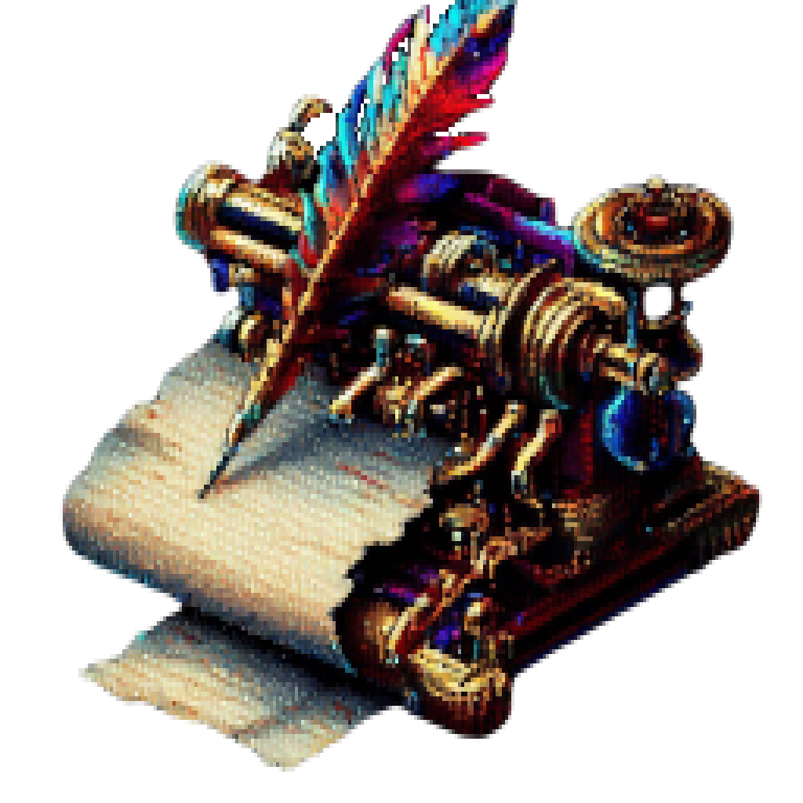

Esto es ML_Notes, un visor de ficheros minimalista y portable
que también permite la creación y cifrado de notas de texto plano,
pixelar o difuminar imágenes,
dibujar sobre texturas generadas aleatoriamente
y mostrar la hora de forma distinta.
El programa admite la mayoría de extensiones conocidas para archivos de
texto plano, audio, imagen y vídeo utilizando las tecnologías de NAudio,
VLC, e ImageMagick. No se recogen datos y la aplicación no tiene capacidad de acceso a Internet.
|  |